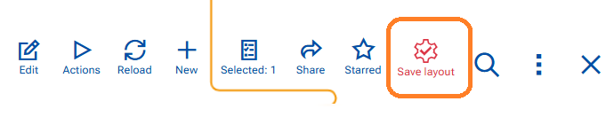

Customize navigator panel
The navigator layout defines which fields are visible and how they are arranged in a navigator. You can customize the layout to better match your working preferences.
Enable Advanced Mode
Managing navigator layouts requires Advanced mode to be enabled.
To turn on Advanced mode:
- Go to the App Bar.
- Select the More options (three dots) menu.
- Toggle Advanced mode to On.

Customize
To customize a navigator’s layout:
- Make sure the navigator you want to customize is the active panel - click inside it
- Go to the top ribbon and click Menu.
- Navigate to section Active Panel.
- Click the name of the currently active navigator.
- Select Customize panel from the listed options.
A Customize Panel window opens and overlays the current navigator.

Adjust Layout Settings
In the Customize panel window, you can:
- Show or hide fields (columns)
- Change the order of fields
- Adjust the height of the panel or freeze a number of columns to the left
When you close the Customize panel window with X, the changes are reflected immediately in the navigator.
Save major layout changes
Any change made through the Customize view panel is considered a major change. To keep the customized layout for the current role and layout for future use:
- Go to the top section of the current screen.
- From the available controls, select the Save Layout button, that is red in colour.
This action updates and saves the current navigator layout persistently.

Save minor layout changes
A minor change is considered any change outside Customize panel option eg. column width, sorting, hiding a column, grouping etc. In such case the Save layout button is blue.
Note
Saved layouts apply to the current role and layout configuration.